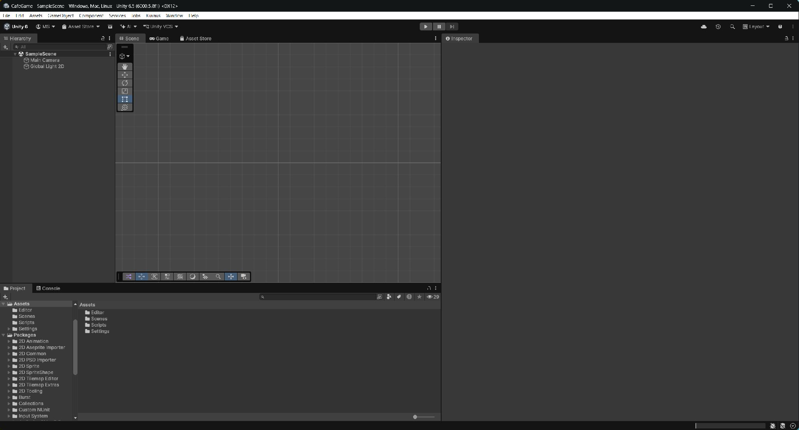
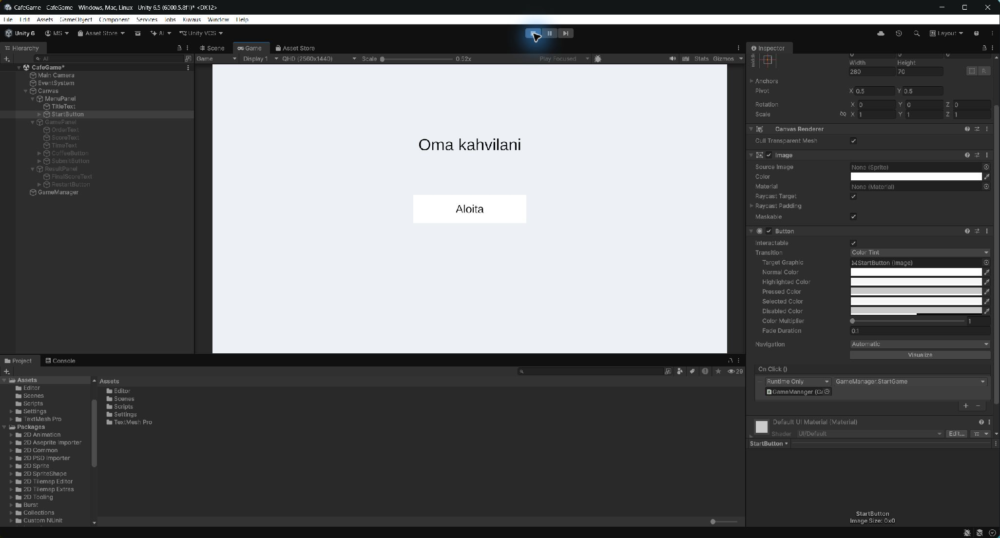
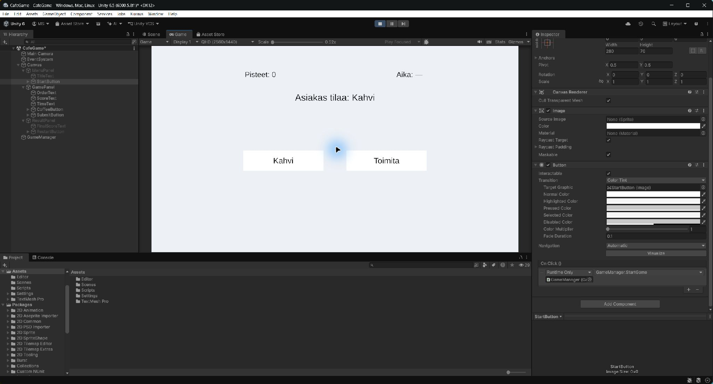
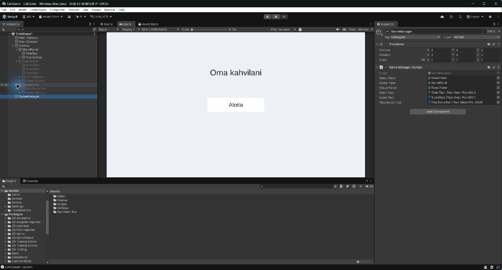
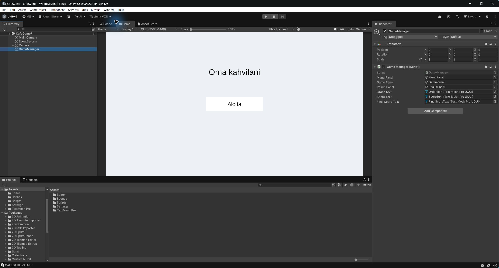
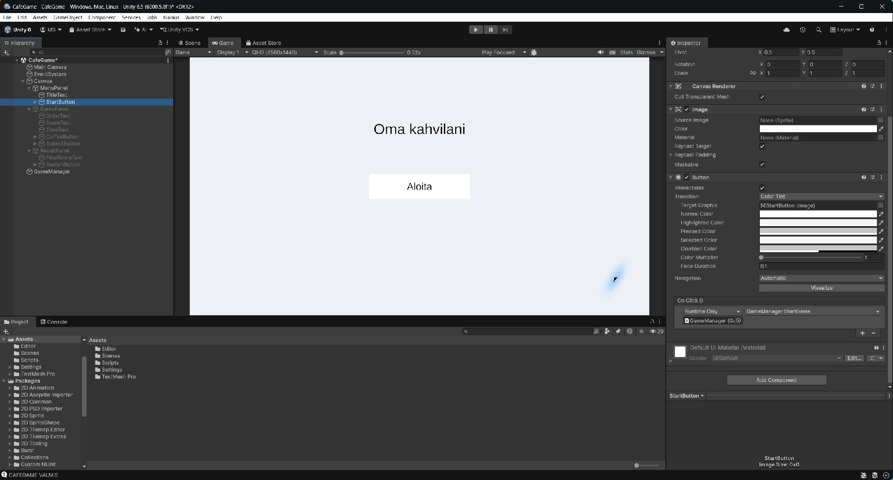
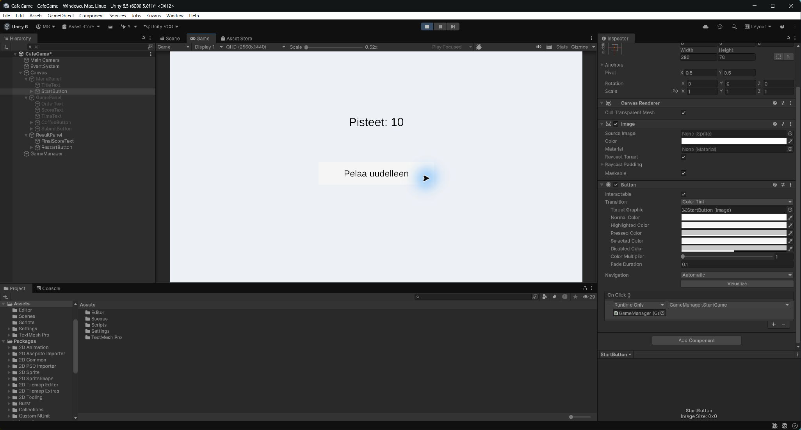
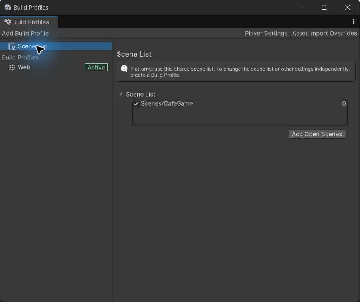
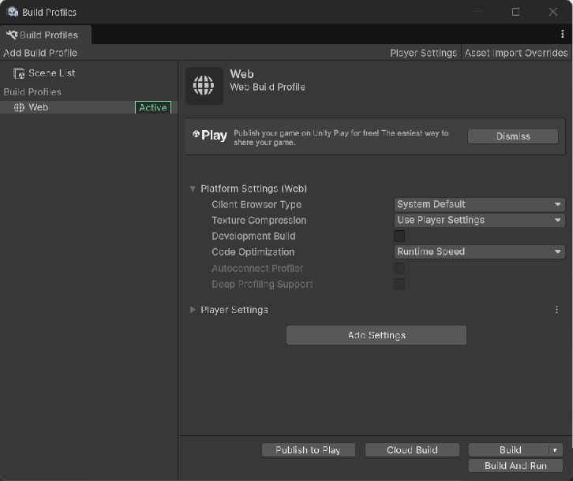

Viikko 36: ensimmäinen pelattava kierros
Rakennat yhden kahvitilauksen pelin. Etene valikosta painikekytkentöihin ja vasta sitten pisteisiin. Tallenna muokkaukset aina Play-tilan ulkopuolella.
Valitse työvaihe
Työvaihe 36-1
Rakenna valikko ja kolme paneelia


- Avaa CafeGame-scene. Varmista, ettei Play ole päällä. Tallenna File → Save.
- Hierarchy → hiiren oikea → UI → Canvas (joissakin Unity 6 -versioissa UI (Canvas)). Säilytä Unityn luoma EventSystem. Jos Canvas on jo olemassa, käytä sitä.

- Valitse Canvas. Inspector → Canvas: Render Mode = Screen Space - Overlay. Canvas Scaler: UI Scale Mode = Scale With Screen Size, Reference Resolution = 1280 × 720, Match = 0.5. Valitse Game-ikkunan kuvasuhteeksi 16:9.
- Canvas → hiiren oikea → UI → Panel. Nimeä MenuPanel. Luo samalla tavalla GamePanel ja ResultPanel. Kaikkien kolmen pitää olla suoraan Canvasin lapsia, ei toistensa sisällä.
- Jätä MenuPanel aktiiviseksi. Piilota GamePanel ja ResultPanel poistamalla Inspectorin yläreunassa oleva aktiivisuusrasti. Se on objektin nimen vieressä; Hierarchyn silmäkuvake ei korvaa tätä.
- MenuPanel → hiiren oikea → UI → Text - TextMeshPro. Tuo TMP Essentials, jos Unity kysyy. Nimeä TitleText. Kirjoita Inspectorin tekstialueeseen pelin nimi. Font Size = 40, väri musta tai muu taustasta erottuva väri.
- Valitse TitleText → Rect Transform. Avaa Anchor Presets ja valitse keskipisteen ankkuri pitäen Alt ja Shift pohjassa. Anna Pos X = 0, Pos Y = 160, Width = 600, Height = 80. Aseta tekstin kohdistus keskelle.
- MenuPanel → UI → Button - TextMeshPro. Nimeä StartButton. Aseta sama keskipisteankkuri, Pos X = 0, Pos Y = 0, Width = 280, Height = 70. Avaa sen lapsi Text (TMP) ja kirjoita Aloita, Font Size = 28.
- Avaa Game-välilehti ja paina Play. Nimi ja Aloita näkyvät. Painike ei vielä vaihda ruutua. Poistu Play-tilasta, tallenna ja tee commit + push.
Pysähdy ja tarkista: Valikko näkyy Play-tilassa. Canvasin alla on kolme erillistä paneelia. Aloita on toistaiseksi ilman toimintoa.
Jos ei onnistu: Jos näet vain harmaan paneelin, tarkista että GamePanel ja ResultPanel ovat pois päältä. Jos teksti puuttuu, tarkista väri, koko ja keskipisteankkuri.
Työvaihe 36-2
Rakenna peli- ja tulosruutu


- Poistu Play-tilasta. Piilota MenuPanel ja aktivoi GamePanel. Lisää GamePanelin lapsiksi kolme Text - TextMeshPro -objektia: OrderText, ScoreText, TimeText.
- Käytä teksteille keskipisteankkuria kuten 36-1:ssa. OrderText: X=0, Y=180, W=700, H=80, Font Size=32, teksti ”Asiakas tilaa: Kahvi”. ScoreText: X=-260, Y=260, W=300, H=50, Font Size=26, teksti ”Pisteet: 0”. TimeText: X=260, Y=260, W=300, H=50, Font Size=26, teksti ”Aika: —”. Valitse tumma tekstiväri ja keskitetty kohdistus.
- Lisää GamePaneliin kaksi Button - TextMeshPro -objektia: CoffeeButton (teksti Kahvi) ja SubmitButton (teksti Toimita). Keskipisteankkuri, W=280, H=70. Kahvi: X=-180, Y=-40. Toimita: X=180, Y=-40. Painikkeiden lapsiteksteille Font Size=28.
- Piilota GamePanel ja aktivoi ResultPanel. Lisää FinalScoreText: keskipisteankkuri, X=0, Y=140, W=600, H=80, Font Size=36, tumma teksti ”Pisteet: 0”.
- Lisää ResultPaneliin RestartButton: keskipisteankkuri, X=0, Y=-20, W=360, H=70. Lapsitekstiksi Pelaa uudelleen ja Font Size=28.
- Aktivoi lopuksi vain MenuPanel. Tallenna scene. Paina Play: vain valikko näkyy. Poistu Play-tilasta.
- Ota kuva Hierarchystä: avaa paneelien nuolet, jotta lapsiobjektit näkyvät. Tallenna project-docs/evidence/week-36/hierarchy.png. Tee commit ja push.
Pysähdy ja tarkista: Tekstit ja painikkeet eivät peitä toisiaan. Play käynnistyy valikosta. TimeText on tässä vaiheessa vain paikanvaraus.
Jos ei onnistu: Jos objektit ovat väärän paneelin sisällä, raahaa ne Hierarchyssä oikeaan paneeliin. Tarkista ruudut yksi paneeli kerrallaan.
Työvaihe 36-3
Liitä GameManager ja kytke Aloita


| Painike | On Click () -metodi |
|---|---|
| StartButton · Aloita | GameManager.StartGame() |
| RestartButton · Pelaa uudelleen | GameManager.RestartGame() |
| CoffeeButton · Kahvi | GameManager.SelectCoffee() |
| SubmitButton · Toimita | GameManager.SubmitOrder() |
Jokaiselle painikkeelle raahataan sama Hierarchyn GameManager-objekti.
- Project → Assets → Create → Folder. Nimeä Scripts. Scripts → hiiren oikea → Create → Scripting → MonoBehaviour Script. Nimeä GameManager. Joissakin versioissa valinta on Create → C# Script.
- Kaksoisklikkaa GameManager.cs. Korvaa tiedoston sisältö pääohjeen työvaiheen 36-3 GameManager-työpohjalla. Lataa sama työpohja tästä tarvittaessa. Jos lataat, siirrä vain tämä yksi .cs-tiedosto Assets/Scripts-kansioon; älä jätä kahta GameManager-luokkaa projektiin.
- Tallenna koodieditorissa ja palaa Unityyn. Odota käännöksen valmistumista. Console ei saa näyttää punaisia koodivirheitä. TODO-kommentit ovat täydennettäviä kohtia, eivät virheitä.
- Hierarchy → Create Empty. Nimeä objekti GameManager. Raahaa Project-ikkunan GameManager.cs tämän objektin päälle.
- Valitse Hierarchyn GameManager. Inspectorissa näkyy Game Manager (Script) ja sen kentät. Raahaa MenuPanel → Menu Panel, GamePanel → Game Panel ja ResultPanel → Result Panel. Raahaa myös kolme tekstikenttää kuvakartan mukaan. TimeTextiä ei kytketä.
- Valitse StartButton → Inspector → Button → On Click (). Paina +. Raahaa Hierarchyn GameManager-objekti tyhjään objektikenttään. Avaa No Function → GameManager → StartGame(). Älä raahaa .cs-tiedostoa.
- Aktivoi ResultPanel hetkeksi muokkaustilassa ja kytke RestartButton samalla tavalla RestartGame()-metodiin. Jätä lopuksi vain MenuPanel aktiiviseksi.
- Paina Play ja Aloita. Valikko katoaa ja peliruutu näkyy. Poistu Play-tilasta, tallenna scene ja tee commit + push.
Pysähdy ja tarkista: Aloita vaihtaa ruudun koodin avulla. Osaat näyttää objektin, skriptin, kenttäkytkennät ja painikkeen kutsuman metodin.
Jos ei onnistu: Metodi puuttuu valikosta: tarkista Console, luokan nimi ja tiedostonimi GameManager. NullReferenceException: jokin Inspector-kenttä on tyhjä. Painike ei reagoi: tarkista EventSystem ja On Click ().
Työvaihe 36-4
Täydennä tilaus ja pisteet
| Painike | On Click () -metodi |
|---|---|
| StartButton · Aloita | GameManager.StartGame() |
| RestartButton · Pelaa uudelleen | GameManager.RestartGame() |
| CoffeeButton · Kahvi | GameManager.SelectCoffee() |
| SubmitButton · Toimita | GameManager.SubmitOrder() |
Jokaiselle painikkeelle raahataan sama Hierarchyn GameManager-objekti.
- Avaa GameManager.cs. Etsi StartGame-metodi. Kirjoita tilauksen TODO-kommentin kohdalle
orderText.text = "Asiakas tilaa: Kahvi";. Tämä vaihtaa pelaajan näkemän tekstin. - Kirjoita seuraavaan TODO-kohtaan
scoreText.text = "Pisteet: " + score;. Tallenna ja testaa Unityssä: Aloita näyttää tilauksen ja nollapisteet. Poistu Play-tilasta. - Etsi SubmitOrder-metodi. Täydennä pisteiden TODO-kohdan tilalle alla oleva if-lohko. Se lisää 10 pistettä vain, jos kahvi on valittu. Jos GDD:n oma pistepäätös on toinen, käytä omaa arvoasi.
- Kirjoita SubmitOrder-metodin seuraavaan TODO-kohtaan
scoreText.text = "Pisteet: " + score;. Säilytä EndGame()-kutsu: yhden tilauksen kierros päättyy tässä viikossa toimitukseen. - Etsi EndGame-metodi. Kirjoita sen TODO-kohtaan
finalScoreText.text = "Pisteet: " + score;. Säilytä ShowOnly(resultPanel)-rivi. - Palaa Unityyn ja odota käännöstä. Kytke CoffeeButton → SelectCoffee() ja SubmitButton → SubmitOrder() samalla tavalla kuin StartButton. Tallenna scene.
- Testaa Play-tilassa: Aloita → Kahvi → Toimita → tulos näyttää 10. Testaa uudelleen: Pelaa uudelleen → Toimita ilman kahvia → tulos näyttää 0. Kahvin valinnan jälkeen ei vielä näy erillistä valintapalautetta; tulos varmistetaan toimittamalla.
- Poistu Play-tilasta. Selitä ohjaajalle bool-muuttujan ja if-ehdon tehtävä. Tee commit ja push. Kirjaa oma pistepäätös ja testitulokset.
Pysähdy ja tarkista: Kahvin kanssa tulos on 10, ilman kahvia 0 (tai GDD:n mukainen oikean toimituksen arvo). Uusi kierros alkaa nollasta.
Jos ei onnistu: Jos pisteitä kertyy edelliseltä kierrokselta, tarkista StartGame: score = 0 ja coffeeSelected = false. Jos tulosteksti puuttuu, tarkista Final Score Text -viite.

Kirjoita tämä SubmitOrder-metodin sisään
if (coffeeSelected)
{
score += 10;
}bool on kyllä/ei-tieto. SelectCoffee asettaa sen todeksi. if suorittaa aaltosulkeiden sisällä olevat rivit vain, kun ehto on tosi. score += 10 lisää nykyisiin pisteisiin kymmenen.
Tämä on opetusesimerkki. Näytä ohjaajalle, mihin metodiin sijoitit rivit ja miten testasit ne. Koko valmista peliä ei ladata tästä.
Työvaihe 36-5
Testaa selainversio ja kerää työnäyte


- Tallenna koodi ja scene. Avaa File → Build Profiles ja varmista Web-profiili sekä CafeGame Scene Listissä. Valitse Build And Run → Builds/Test.
- Kirjoita ennen testiä päiväkirjaan odotukset alla olevan taulukon mukaan. Käytä omia pisteitäsi, jos ne poikkeavat esimerkistä.
- Aja kolme erillistä testikierrosta selaimessa. Älä vaihda paneeleja Inspectorissa testin aikana. Kirjaa jokaisen todellinen tulos.
- Jos testi epäonnistuu, kirjaa havainto ennen korjausta. Korjaa, tee uusi build ja aja testi uudelleen. Älä kirjaa virhettä, jota et havainnut.
- Ota kuvat valikosta, peliruudusta ja tuloksesta tai lyhyt video koko pelipolusta. Tallenna project-docs/evidence/week-36-kansioon.
- Tee commit ja push. Lisää valmiisiin GitHub-issueihin testin tulos ja linkki toteutuksen commitiin. Sulje vain valmistuneet issuet.
- Täytä viikon 36 päiväkirja: mitä teit, miksi ja missä työnäyte on. Lataa päivitetty päiväkirja project-docs-kansioon ja vie Gitiin.
Pysähdy ja tarkista: Kolme selainkierrosta on kirjattu ja lopullinen versio läpäisee ne. Ohjaaja voi avata koodin, kuvat, testikirjaukset ja commitit.
Jos ei onnistu: Jos editori toimii mutta selain näyttää vanhan pelin, varmista uusi build ja päivitä sen avaama sivu. Näytä ensimmäinen virhe ohjaajalle, jos build ei valmistu.
Kolme testikierrosta
| Tee selaimessa | Odotettu tulos | Kirjaa itse |
|---|---|---|
| Aloita → Kahvi → Toimita | Tulosruutu: 10 pistettä | Todellinen tulos ja päivä |
| Pelaa uudelleen → Toimita ilman Kahvia | Tulosruutu: 0 pistettä | Todellinen tulos ja päivä |
| Pelaa uudelleen → Kahvi → Toimita | Tulosruutu: 10 pistettä, ei 20 | Todellinen tulos ja päivä |